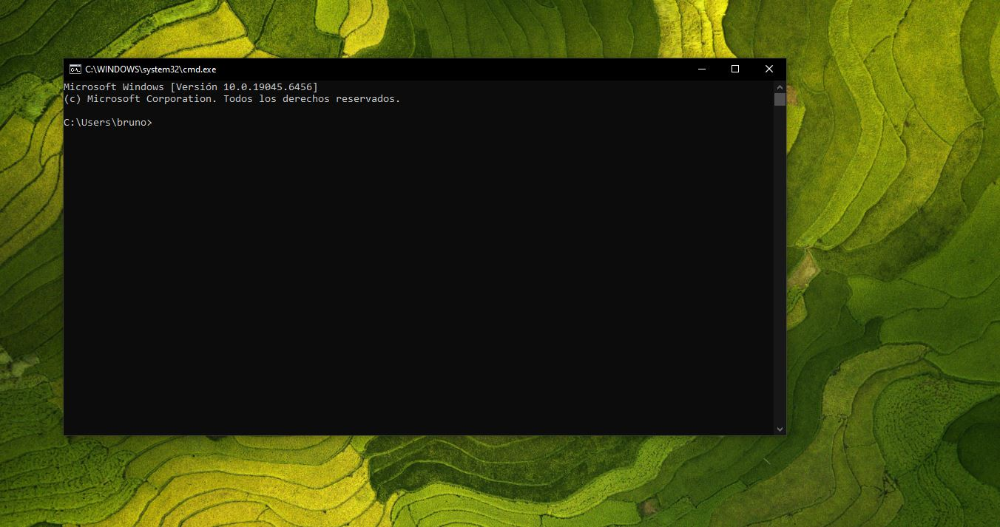
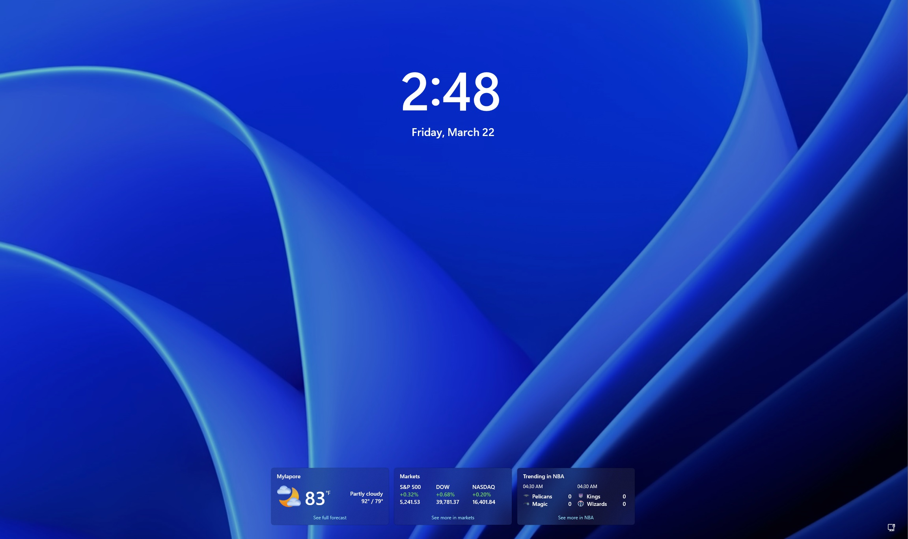
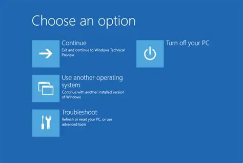

Recover Windows with forgotten password
Here we will see how to recover your Windows password if you don't remember it without having to format the disk, using only the command prompt.
We'll go step by step; tap "explore more" to open the content.
Explorar más

First step
1- The first thing to do is to press the shift key and then press restart when the session is locked.

Second step
2- The second step once in the tool is to press Troubleshoot, advanced options, Command Prompt.

Three step
3-Once the command prompt is open, enter the following codes in sys32:
ren utilman.exe utilman1.exe
ren cmd.exe utilman.exe
exit
After closing the terminal, press continue.
Four step
4- Then we press the accessibility icon and the terminal will open; there we will make the modifications.
We open the terminal from the accessibility button and type the following: `control passwords2`
This will open the user control panel. We select the administrator user and change the password, and that's it, we have the password again.